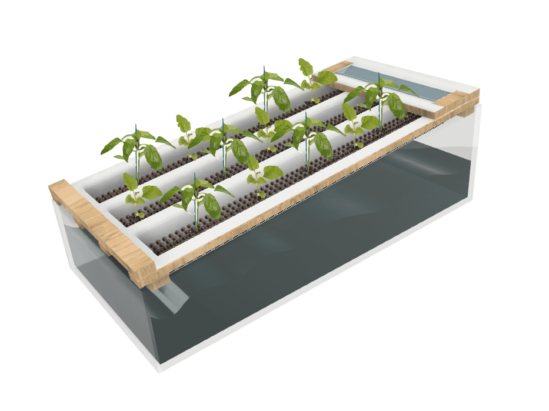
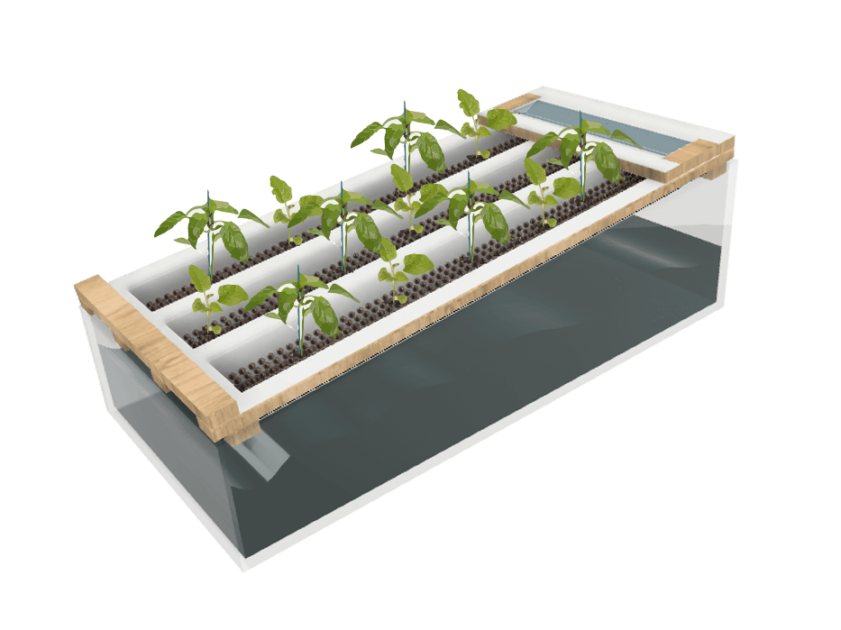

fabacademy
week 1-5
week 1: principles & practices

learning outcomes: The first week was about project management and gives us an overview about the whole fabacademy – tasks, challenges, insights, examples, websites and helps us to understand where everything is and what it contains. Also we got to understand how to use: git push, git check out master, Git pull, Git merge develop, Git push, Git´s bible: steps and Git pull: downloads the latest changes, current claod repository to the local one. Also we learned more about different versions of control system (VCS), which contains three different: local, distributed and centralized.
reflection: The first week was nice for me because I could order first all my files, pictures etc. and also refresh my whole website and git push everything what I have to make it online. Also I changed a bid my design and set everything in right folders. I feel like I need to learn a bid more about git bash etc., because I don’t really understand the difference between all the apps.
tasks: This week the tasks where first to ubload a picture to color up the fabacademy website, also to create new pages on our website which contains the fabacademy pages. After checking other websites of the previous weeks I liked the most the websites of Krzysztof Wronsk, because his reflection/oview was very clear, not one page every week, which makes it easier to read. Also I liked the website reflection of David wyss, which is neat, minimalist and also shows some specific pictures. The third I liked the website of Ines Burdiles, which includes a nice overview and also her feelings and facts about the week and the date.
week 2: computer-aided design
learning outcomes: We learned many things this class about what is CAD, what is the difference between vector and pixel pictures, colours and the difference between mesh and nurbs modelling and which tools we could use. CAD stands for creation, modification, analysis and optimization of design, where computers are basically used for atomisation, calculating and communicating. If you upload pictures the GPU transfers the pixels into a presentation mode. Also vectorized pictures/graphics. Vectorized pictures can just be made from computers. So pixels are the smallest unit of bidmap images and for example a normal picture contains normally around 20.000 pixels. There it would be good also to understand the word resolution, which is the product of the width and height of a digital image expressed in pixels. You can have different colar spaces like prophoto RGB, Adobe RGB, CMYK and sRGB. Also for example all mobile phones have the same photographic sensor but apple is good in translating an image in a presentation. You can have different kind of picture editor programs and also programs for creating vector files/pictures/ animations. Like “gimp”, “krita” are good for creating files like photoshop, “inscape”, “coral” and “vectr” are opensource too and are like adobe illustruator. And “Blender” for example is a software for animation, talk or be part of the community where you can ask questions and discuss with other people about thoughts and problems and also it’s a tool to relate the real scene or 2D picture to the digital one, which could be 3D. When 3d modelling you can have different shapes/methods like nurbs and mesh modelling. “Nurbs” are mathematical model used in computer graphics to generate curves/surfaces (instead of x and y --> you use v and u), but its not very accurate and not useful for digital fabrication. Mesh modelling is a collection of vertices, edges and faces (geometric forms) and can be used for exact shapes. “Generative designs in not about designing, it is about designing the system in designs”
reflection: This week I was a bid confused and stressed about how to combine my master approach with the fabacademy challenges and tasks, but now I would like to focus much more and think of different options about the tasks I would like to make and what I what to take of the fabacademy.
 


tasks: I decided to make a 3D model from my hydroponic system on my balcony. So First i make my 3D model with fusion, which I never used before, because in my past I used the most the program called solidworks and rendered it with blender. For the next task I made a picture from my terrasse and of the possible position for the hydroponicsystem and added it at the picture and added some vector plants and water on the poster with illustrator. In the pictures you can see my personal project (builing a low tech hydroponic system) and the 3D model as a rendering and on my terase with plants.

week 3: computer controlled cutting
learning outcomes:This week we learned a lot about CAM (Computer aided machining), which is also known as a part of digital fabrication. Laster cutters works with a laser source, optics, two axis, many lenses and a controller. Through the lenses the light will be concentrated on one point, there for its important to set this right, otherwise it could burn. Also it depends on which material you use, which is affecting the arrangement of the lenses and all the other settings. Laser cutting is used with materials like plastics, wood, cardboard, fabrics etc. Also there are materials which can not be used for laser cutting, because they cause toxic gases like PVC, PVB, Carbon fibres, materials which contains VI, PTFE, halogens (fluorine, chlorine, bromine, iodine and astatine) or Beryllium oxide. For setting the parameters for each material its important to check the power, speed and frequency, for plastics for example we use higher frequencies.You have different kind of laser systems.The “Co2“ cutters are for Wood, paper, leather, acrylic, some plastics, and foams.The “Neodymium“ cutters are for Metal, plastics and some ceramics and the “fiber” ones are for metals and plastics. Engraving, marking or cutting are the main ways of lasercut, when using them you can create for example joints like fingers, squares, etc.. You can also create kerfes to bend it or bend it while using moulds and glue. Also you can read an imagae and create a half tone to cut. Nesting is for setting up the parts right. So to summarise it the three golden rules to check before starting the laser cutter are: focus that the material is perfect settled, make sure you have the right parameters and turn on the extraction, because when burning material there will be fumes. So its important to use a smoke extraction and also something to give compressed air supply.
reflection: This class I learned a lot about how laser cutting is actually working and what parts the it contains. I used them already, because I studying industrial design engineering and used laser cutters for doing prototypes or final results but it was really nice to get a refreshment, also to get to know different tools for CAD modelling and a small tour into the world of “Grashopper”, what I never used, but would like to learn. Also I want to improve my sills with Blender.
tasks:parametric design: I wanted to desgin a laptop stand, to be able to use in a more ergonomic way and which is in an specific angle. Also the stand should hold itself without any screws and glue and has been constructed throught parametric design. I used first fusion because i was used to a tool like solid works and fusion is quiet similar. But then i realised that fusion and solidworks are better when doing 3d modelling and rhino is better for 2d modelling. So i swithed my design to that. Actually i never really used rhino so it was a challenge for me, but it was also nice to get to know a different programm.
 The first steps were hard but then it went better. On the scetch you can see the first details of my design and how should it look like. So in lasered the first design with th shown 2d modell and got a good result, but not in the function. When bending the rounded parts i realised that the kerfs part was not big enough so i couldnt bend it. Unfortunately also the press-fit holding was not working well, because i constructed it not exact. So i tried a new design. I felt bad to use new material but want to work better in the future and create the parts more accurat before lastercutting them.
The first steps were hard but then it went better. On the scetch you can see the first details of my design and how should it look like. So in lasered the first design with th shown 2d modell and got a good result, but not in the function. When bending the rounded parts i realised that the kerfs part was not big enough so i couldnt bend it. Unfortunately also the press-fit holding was not working well, because i constructed it not exact. So i tried a new design. I felt bad to use new material but want to work better in the future and create the parts more accurat before lastercutting them.

week 4: electronics production
learning outcomes:This week is all about the Pcb which means “printed circuit board”. There are different kind of boards some are out of plastic or coper, where you remove the not used parts. You can remove the parts with a tiny cnc machine, which could create lines and holes. To prevent the coper board from rusting (getting green), its important to add a special material layer. There are one-sight and two-sights boards, where the board with the two sights is used for when you need two connected sights. To connect the sights you can also use rivets. The board include 1,5mm filling material and then about 0,1mm coper. For the milling often you use the machine called “Srm-20 cnc“.Any irregularity in the cut base will be reflected in the cut plate. Don´t try to save duct tape, save pcb circuity. Its important not to cut the filling material and just the coper, to avoid irregularities and issues when using them. There are different levels of soldering material, it is important to note that some can only withstand low wattages and depending on the soldering material which contains a wattage, damage can occur. The hot gun is really only used when the parts are very small or have longer curved hooks.
reflection:This week was interesting but also really stressful. We had already besides fabacademy many tasks on our to-do list and then we got the first fabacademy challenge and the weekly task. I had been soldering before but never designed / created a whole PCB board. So this was completely new and interesting to see. Solding I love, because its very relaxing and focused.


tasks: For creating a pcb board you create first the file you want and save it as a png or sbg file, there its necessary to create a sight, front and back file. Then you put it on modsproject.org, click with the right mouse programs open file srm-20 absolute add your picture. This porgramm creates out of our image a useful file to use for the cutter. There is a settings panel, where you for example change the offset number (the multipler used to make the cuts x4 wider). You can also put it on 0 to erase all the coper you don’t need and give it a cleaner looking. If you go on “calculate” you can control your design if some pathes are missing. After saving („save programm to file“ is to save all the settings) the file, you can send it to the printer. There you need to put the coordinates on 0,0 before starting the milling. After milling the PCB board Paula and me were solding different kind of additives to it.
week 5: 3D printing & scanning
learning outcomes: The technology of 3D printing began in the early 1980s. Its an additive manufacturing way, where you have zero / minimal waste, its fast and easy and you are almost free in designing what you want. Different to a subtractive manufacturing like CNC. “FDM” for example is for extruding lines from solid thermoplastic material, so fused deposition modelling, which melts filaments or breads and stacks them in thin lines. For FDM you can materials like Pla, Abs, Nylon, Petg, Tpu-filaflex and hips. Also there is SLA = Stereolithography which is the oldest patented additive manufacturing process in which a workpiece is built up layer by layer using points that materialize freely in space, so no support is necessary compared to FDM. The technique “3DP” is for metal parts, its lasering which sints thin layer of powdered material, and again support is not really necessary and also you can print in liquids like resins or just in the air. For printing you have different programs to create the slices you want to have for example “Ultimaker” and “Netfab Autocad”, where you set up the 3D file.
The thinner the slices the longer it will take to print, but also the more accurate it is. You can also change how thick the shell and also how tense the inside (filling) should be. There are different shapes of fillings like rectangular, triangular, wiggle or honeycomb. Photogrametry is a tool to scan pictures and afterwards creates 3D models to print. Also you can scan 3D shapes to make 3D models out of it, but for this you need a laser like “Lidar 3d scanning”, which captures scenes in stunning detail, allowing you to build highly accurate models of objects, rooms, and even whole buildings and outdoor environments. And the last thing are paste printers like “Wasp clay printer”, “Stoneflower 3d paste printer” and “Luthum”. You can print different kind of liquids like clay or food where you add for example xanthan gum which is combining the material. There its important not to use to much pressure and also the material should not have air. There are different types of printers: like with air pressure or screw pressure. For the printing you design a 3D shape and put it for example on grasshopper to create slices. There are different open source platforms where you can download 3D models like “food4rhino“ and “Thingiverse”.
reflection: For me it was not the first time using and seeing 3D printers with th “normal filament”/ plastic, but the clay I saw the first time in real life and all the liquid printers, which are really impressing. In general I am always impressed about the stabilisation and the fast drying. At the beginning of my career there weren´t many options for 3D printing, mostly plastic, but not clay, concrete and FOOD!, which is amazing and is revolutionizing technologies. Also very interesting is the technique photogrammetry or laser scanning for creating 3d models. Photogrammetry (3D model out of a big amount of pictures) is less exact but has a better visual output than laser scanning, where you scan directly the whole 3D model.

tasks: I 3d printed a citrus press, because we were just allowed to print a 70x770x70mm thing. This press should be for a glass/ cup. After 3d modelling, I picked the specific printer and used ultimate cura as a slicer program. Then it was important to define the printing settings (profiles(layer height and width), infill (more or less solid), Support (an angle less the 45% needs a support), material (temperature, flow: should be always 100%), plate adhesion (which is an extra plate around the object to have it more stable). Then I put the layers between 0.3 and 0.15, which always gives good quality.In the end i am very happy with the result, just it was very hard to remove the print from the printer plant.
tasks: Also I wanted to try to use the paste printer from Edu with the beer spent grains, but unfortunately the grains went bad and we didnt have enough time. But we saw how Edu used the paste printer for printing potatoe starch.
FABACADEMY